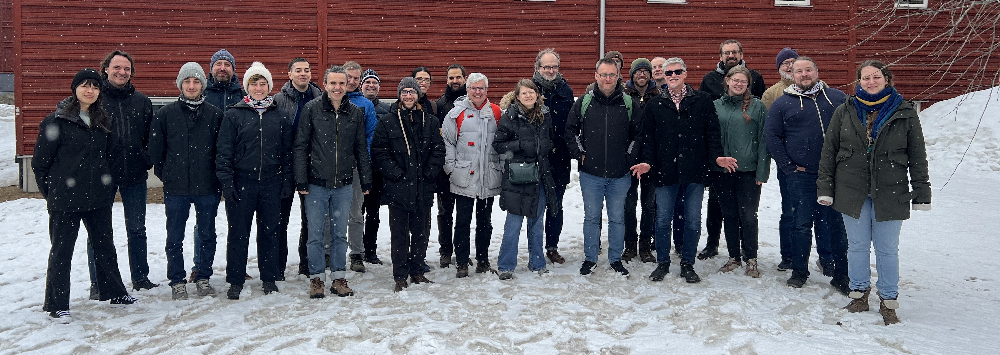

Practical info - Registration - Organisation - Program - Sponsors - Contact

(group picture from 9th EasyBuild User Meeting in Umeå - April 2024)
EasyBuild is a software build and installation framework that allows you to manage (scientific) software on High Performance Computing (HPC) systems in an efficient way.
The EasyBuild User Meeting is an open and highly interactive event that provides a great opportunity to meet fellow EasyBuild enthusiasts, discuss related topics, and learn about new aspects of the tool.
It is intended for people that are already familiar with EasyBuild, ranging from occasional users to EasyBuild core developers, maintainers, and experts. Topics will be less introductory in nature than during other events like EasyBuild tutorials.
The program includes presentations by both EasyBuild users and developers, as well as talks about open source projects relevant to the EasyBuild community.
The 10th EasyBuild User Meeting will be held Tuesday-Thursday 25-27 March 2025 in Jülich (Germany).
The venue is Rotunda room at the Jülich Supercomputing Centre.
This is an open meeting, anybody interested is welcome to join.
Attendance is free of cost, but registration is required (see below).
Hotels in Jülich are limited, so you should book early!
We intend to provide live streaming of all presentations that are part of the EUM'25 agenda, via Zoom and the EasyBuild YouTube channel.
Remote attendees will be able to join a Zoom session for interactive discussions with the speakers.
Note that only registered attendees will have access to the Zoom session!
We also intend to record all sessions, and will make the recordings available shortly after the live presentations, via the EasyBuild YouTube channel.
Remote attendees will be able to submit questions via the #eum channel in the EasyBuild Slack. Comments in YouTube will be disabled for the live streaming events.
If you are not logged in to the EasyBuild Slack yet, you can request an invitation to join via https://easybuild.io/join-slack.
If you plan to attend one or more presentations (on-site or remotely), you must register. Seats for on-site attendance are limited.
Although attendance is free and open to anyone, having a good view on how well the different sessions will be attended is important for us to be well prepared.
All seats for in-person attendance are taken!
Only registration for virtual attendance (via Zoom) is still possible...
Click here to register for remote attendance!
Registration (for remote attendance) will close on Sunday 23 March 2025 19:59 CEST.
Updates and practical information will be sent via email to anyone who registered.
The 10th EasyBuild User Meeting consists of 3 days of presentations and hands-on sessions.
Please note that all times are in Central European Time (CET, equivalent to UTC+1).
We intentionally left ample time in between talks to allow for Q&A, interactive discussions, switching between speakers and breaks.
(subject to change!)
[Tue 25 Mar 2025 - 09:00-10:00 CET - in person]
Meet & greet + registration
Informal meet & greet + registration session.
[Tue 25 Mar 2025 - 10:00-10:15 CET - on-site]
Welcome to the *10th* EasyBuild User Meeting (EUM'25)
(slides)
Overview of agenda + practical info + sponsors
[Tue 25 Mar 2025 - 10:15-11:00 CET - on-site]
EasyBuild State of the Union
(slides)
by Kenneth Hoste (Ghent University, Belgium)
Let's look back at what was changed in EasyBuild in the last year, how we are doing right now, what we are currently working on, which challenges are ahead, and the enhancements and changes in EasyBuild we envision for the future.
In addition, the highlights of the last EasyBuild User Survey will be covered in this talk.
[Tue 25 Mar 2025 - 11:00-11:30 CET - on-site]
EasyBuild 5.0
(slides)
by Simon Branford (University of Birmingham)
A detailed overview of what has changed in EasyBuild 5.0, and what you will need to be aware of to transition from EasyBuild 4.x to EasyBuild 5.0.
[Tue 25 Mar 2025 - 13:00-13:15 CET - in person]
Controlling the shell environment in EasyBuild v5.0
(slides)
by Alex Domingo (Vrije Universiteit Brussel)
Configuration of compilers, linkers, language interpreters and almost any software is commonly done by setting environment variables in the active shell. This talk covers how the shell environment is handled in EasyBuild 5.0. What is done in module files, what EasyBuild does while building software, and also how EasyBuild controls the environments of interpreted languages, such as Python, R and Julia.
[Tue 25 Mar 2025 - 13:15-13:30 CET - in person]
Getting Started as EasyBuild Contributor
(slides)
by Jan André Reuter (Jülich Supercomputing Centre)
EasyBuild is a software build and installation framework, widely used on HPC systems and clusters to manage software installations. With over 20.000 build configs, corresponding build blocks and a whole framework around it, EasyBuild is a large project and contributing can feel intimidating at first. But it does not have to be!
In this talk, I will talk about my journey starting to contribute to EasyBuild. I show my personal use case, my motivation to contribute both upstream and at JSC, and my experiences in doing so. I share features I appreciated, how I accidentally broke EasyBuild twice and mention issues I ran into during development.
At the end I will open the discussion regarding improvements for users and developers and share things I would like to see in EasyBuild in the future.
[Tue 25 Mar 2025 - 14:00-14:30 CET - in person]
Environment Modules: features available, next developments and project update
(slides)
After more than 3 decades Modules project, aka Environment Modules, is still there and active. This talk will describe the most prominent features added in the recent years and directions taken for next developments. Project vision and contributions will be detailed as well as its organization and the changes currently made to it. This talk will also be the occasion to hear from the audience its perception and what would be the most interesting features to add to a "module" tool nowadays.
[Tue 25 Mar 2025 - 15:00-15:20 CET - in person]
A Secure Workflow for Shared HPC Systems
(slides)
by Alexander Grund (TU Dresden)
The demand for access to the vast computational resources of HPC systems is growing among researchers from various scientific domains, including those working with highly sensitive data.
While HPC systems offer the computational power required for increasingly complex research methods, they are primarily designed for performance rather than security. These systems share resources among multiple users, making it challenging to ensure data confidentiality. Traditional security measures like UNIX permissions are often insufficient to protect sensitive information — especially as new security vulnerabilities continue to emerge.
This talk presents a secure workflow developed at GWDG Göttingen (https://gwdg.de) and currently being implemented at ZIH Dresden. Designed to be broadly applicable across different use cases, this approach enables the secure transfer, storage, and processing of sensitive data with minimal impact on performance.
[Tue 25 Mar 2025 - 15:20-15:45 CET - in person]
Integrating exaCB with EasyBuild: The why and the how
(slides)
by Jayesh Badwaik (Jülich Supercomputing Centre)
The Jülich Supercomputing Centre (JSC) is deploying the JUPITER supercomputer, powered by the Grace-Hopper-based architecture. To support early application adaptation, JSC has introduced the JUREAP early access program, where continuous benchmarking plays a crucial role in tracking application progress and system performance.
exaCB, the selected continuous benchmarking framework, integrates key tools such as GitLab CI/CD, Jacamar for CI integration with supercomputers, and JUBE for generating reproducible benchmark scripts. However, a major challenge in ensuring reproducibility lies in effective dependency resolution during the build process. While EasyBuild serves as the default tool, many applications introduce additional ad hoc mechanisms for dependency management.
In this talk, I will introduce exaCB and highlight the key challenges in achieving consistent and reproducible dependency management. Given the need for a unified approach to simplify dependency handling, I will outline requirements that need to be met to improve reproducibility. I will also present a tentative proposal to enhance EasyBuild-based workflows and invite feedback and alternative ideas to help refine the path forward.
[Tue 25 Mar 2025 - 15:45-16:15 CET - in person]
The AMD ROCm(tm) Platform
(slides)
Michael Klemm (AMD)
The AMD ROCm(tm) Platform is the software stack that drives the performance of the AMD Instinct(tm) Accelerators. The AMD ROCm platform is a full-fledged software environment, based on open-source software, and contains GPU drivers, libraries, such as math libraries, and tools such as compilers, debuggers, and performance profilers. In this talk, we will recap some of the components of the software stack and show how it can be used to bring compute kernels to the AMD Instinct Accelerator.
Speaker bio: Dr. Michael Klemm is a Principal Member of Technical Staff in the Compilers, Languages, Runtimes & Tools team of the Machine Learning & Software Engineering group at AMD. He is part of the OpenMP compiler team, focusing on application and kernel performance for AMD Instinct accelerators for High Performance and Throughput Computing.
[Wed 26 Mar 2025 - 09:00-10:00 CET - in person]
Keynote: Modern MPI and what you need to know about it
(slides)
by Jeff Hammond (NVIDIA)
MPI is wildly successful on the basis of core functionality introduced to the specification in the 1990s, but there's a lot more to MPI than this and you should know about it. This talk will describe modern developments in MPI, including improved one-sided communication and Fortran bindings (MPI-3), large-count support (MPI-4), and the upcoming ABI (Application Binary Interface) features. I'll describe the design principles and real-world use cases for these features as well as how to use them effectively.
Speaker bio: Jeff Hammond is a Principal Software Architect at NVIDIA focused on HPC software. He led the MPI ABI standardization and large count efforts, and has made a significant impact on the MPI one-sided communication ecosystem. His research interests have included matrix and tensor algebra, parallel programming models, and HPC system architecture. Jeff has a PhD in Chemistry from the University of Chicago and has been an active developer and user of computational chemistry software for more than 20 years.
[Wed 26 Mar 2025 - 10:00-10:30 CET - in person]
A new LLVM toolchain for EasyBuild
(slides)
by Davide Grassano (CECAM)
LLVM is a widely used compiler infrastructure, with a modular design that allows for easy integration of new features. It is the foundation of the Clang C/C++ compiler, as well as the Rust and Swift compilers. It has also been widely adopted by HPC vendors, with AMD, NVIDIA and Intel all using LLVM as the foundation of their compilers.
Here we will present the current status of a new LLVM toolchain for EasyBuild. Different option for building both the LLVM backend and the front-end compilers will be discussed. Finally a comparison of features and performance against the existing GCC toolchain will be presented focusing on C/C++ and Fortran.
[Wed 26 Mar 2025 - 11:00-11:30 CET - in person]
EasyBuild's Linear Algebra
(slides)
by Bart Oldeman (Digital Research Alliance of Canada)
The linear algebra infrastructure in EasyBuild's toolchains consists of 4 parts: BLAS, LAPACK, BLACS, and ScaLAPACK. We will cover what they do, their history, and what drives performance in modern BLAS implementations.
Nowadays BLIS, AOCL-BLAS, OpenBLAS, and MKL are popular implementations, and we show how they compare performance-wise on the newer x86 architectures AMD Zen4 (Genoa) and Intel Golden Cove (Sapphire Rapids).
EasyBuild's also uses FlexiBLAS, which can dynamically select a BLAS implementation depending on your hardware, and even loosely link to MKL without needing a hard dependency on MKL. We explain how the resulting FlexiBLAS library can then be almost universally used with a few small exceptions concerning functions returning complex values.
[Wed 26 Mar 2025 - 11:30-12:00 CET - in person]
OpenGL support in EasyBuild
(slides)
Jens Henrik Göbbert (Jülich Supercomputing Centre)
Heavy 3D visualization tasks can be accelerated enormously if they are supported by a GPU. The current default Easybuild configuration files only depend on Mesa for OpenGL. This limits OpenGL applications to software-accelerated rendering instead of hardware-accelerated rendering in most cases. If you want to deploy software packages that take advantage of the installed GPUs for OpenGL, a simple approach can be to install the same module twice - once for software OpenGL with Mesa and once for hardware-accelerated OpenGL using the vendor-specific OpenGL library. However, this passes the responsibility for the best choice on to the user. It would be much better if the correct OpenGL library were simply selected at runtime.
To make that possible the standard approach is the use of libglvnd as a vendor-neutral dispatch layer for arbitrating OpenGL API calls between multiple vendors. It allows multiple drivers from different vendors to coexist on the same filesystem, and determines which vendor to dispatch each API call to at runtime. In this talk we want to show how libglvnd works and how it can be a key component to integrate OpenGL into the Easybuild framework in an advanced way.
[Wed 26 Mar 2025 - 13:00-13:15 CET - in person]
Performance Optimisation & Productivity Centre of Excellence (POP CoE)
by Brian Wylie (Jülich Supercomputing Centre)
EuroHPC application-enabling POP CoE provides parallel application developers free services and training to analyse performance and scaling and guide optimisation of HPC applications. Secondary services examine execution correctness and energy efficiency. The talk will briefly introduce our methodology and open-source tools, demonstrated with recent assessments of codes from other EuroHPC application CoEs.
[Wed 26 Mar 2025 - 13:15-13:30 CET - in person]
Got bottlenecks? Score-P & friends to the rescue!
(slides)
by Markus Geimer (Jülich Supercomputing Centre)
This talk briefly introduces Score-P, a community-maintained open-source instrumentation and measurement infrastructure for performance analysis of HPC applications. We highlight Score-P's core functionality and features, and outline the associated tools ecosystem developed by a number of partner institutions. In this context, a specific focus is placed on the Scalasca Trace Tools package.
[Wed 26 Mar 2025 - 13:30-14:00 CET - in person]
State of LLMs
(slides)
by Alexandre Strube (Jülich Supercomputing Centre)
In this talk, we'll take a snapshot of the rapidly evolving landscape of Large Language Models (LLMs) in 2025, highlighting the latest advancements, trends, and challenges in the field.
We'll also explore the growing influence of China in the LLM ecosystem, including its innovative applications, key players, and future directions. From current state to future prospects, we'll examine the exciting developments shaping the future of LLMs and their implications for the european AI community.
[Wed 26 Mar 2025 - 15:00-18:30 CET - in person]
Social event: Keeping the P in HPC
sponsored by Do IT Now
Details will be revealed at the 10th EasyBuild User Meeting itself!
[Thu 27 Mar 2025 - 13:00-13:30 CET - in person]
CVMFS and the EESSI file system layer: Recent Developments
(slides)
by Valentin Volkl (CERN)
In this talk, the CernVM-FS developers will give an overview of the current state of CernVM-FS, the challenges and workarounds used by the high-energy physics for HPC deployments, and discuss recent developments and future plans.
[Thu 27 Mar 2025 - 14:10-14:30 CET - in person]
Open discussion: how to recruit and retain IT talents in Research Computing
(slides)
by Jörg Saßmannshausen (Imperial College London)
One of the big problems we are all seem to face in Research Computing is the lack of a younger generation willing to work at Universities in Research Computing. It appears that most IT students, when finishing their degree, are going to industry for a number of reasons, with a significant higher pay probably the most motivating one. In order to literally to survive, we need to attract and retain these talents. In this open discussion we want to bounce ideas around.
Some possible ideas could be:
[Thu 27 Mar 2025 - 17:00-17:30 CET - in person]
JUPITER: State of Matters
(slides)
by Damian Alvarez and Sebastian Achilles
The first Exascale system in Europe is not just arriving, but it is actually next door during the EUM'25. In this talk we'll cover the process to reach this point, the challenges to host a system of this size in our campus, the hardware aspects of the system, as well as some of the key components of the software architecture. On the user-facing side of this endeavour we will highlight the role of EasyBuild on JUPITER, as well as the initial approach for the foreseable deployment of EESSI on it.
In case of questions, please contact eum@lists.ugent.be.
Previous EasyBuild User Meetings:
EUM'24 (Umeå) -
EUM'23 (London) -
EUM'22 (virtual) -
EUM'21 (virtual) -
EUM'20 (Barcelona)
EUM'19 (Louvain-la-Neuve) -
EUM'18 (Amsterdam) -
EUM'17 (Jülich) -
EUM'16 (Ghent)